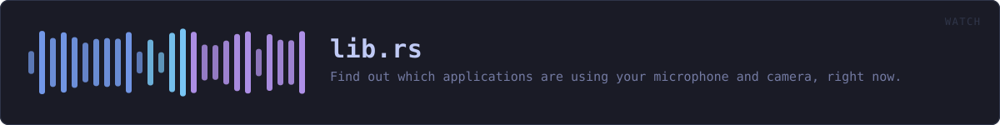

crates/veilvoice-watch/src/lib.rs
veilvoice-watch · 412 lines · read the source here · or on GitHub
Find out which applications are using your microphone and camera, right now.
Why this belongs in a voice-privacy tool
VeilVoice protects the audio you choose to send. This answers a different and more basic question: is something listening that you did not choose? A de-identified voice on a call is worth very little if a second program is recording the raw microphone at the same time.
Operating systems have grown indicators for this, the orange dot and the taskbar icon, but they are small, easily missed, and tell you only that something is active, rarely what. This reports the process, its PID and how long it has held the device.
What it can actually see, per platform
Detection is honest about its limits, because a monitor that quietly sees nothing is worse than no monitor at all, because it produces false confidence. support reports what the current platform can do before you rely on it.
| Platform | Microphone | Camera | How | |---|---|---|---| | Windows | ✅ | ✅ | The same CapabilityAccessManager records the OS privacy indicator uses | | Linux | ✅ | ✅ | /proc/*/fd handles open on /dev/snd/pcm* and /dev/video* | | macOS | ❌ | ❌ | No public API exposes it; anything claiming otherwise on macOS is guessing |
On Linux you see every process you have permission to inspect. Without root that means your own; other users' processes are invisible, and that is a kernel permission boundary rather than something this crate can work around.
In plain words
This tells you when something is using your microphone or camera.
Not what it is doing with them -- just that a program has them open, and which program. That is worth knowing before you start talking, and it is the kind of thing an operating system knows and does not always show you.
It cannot see everything. Some ways of getting at a microphone do not go past the place this reads.
WHAT THIS FILE CONTAINS
412 lines defining 13 functions (9 public), 6 types and 1 constant. Everything below is read out of the source, so it cannot disagree with the code.
The types it owns.
enum DeviceKindline 60 — The kind of device being used.struct DeviceUseline 78 — One application holding one device.struct Supportline 112 — What detection is possible here.enum Errorline 160 — Everything that can go wrong here.enum Changeline 205 — A change between two scans.struct Monitorline 237 — Watches for changes between scans.
What happens when it runs. These are the ways in: public, and nothing else in this file calls them, so they are what an outside caller reaches first.
DeviceUse::keyline 99 — A stable key for comparing two scans, so an app is not reported as having stopped and restarted when nothing changed.DeviceUse::held_forline 104 — How long this application has held the device.supportline 126 — Report what this platform can detect.Change::alertline 214 — A one-line alert suitable for a notification or an overlay.DeviceUse::describeline 224 — name (pid 1234), or just the name when there is no PID.Monitor::newline 243 — A monitor that has not yet seen anything.Monitor::currentline 248 — The most recent snapshot.Monitor::pollline 257 — Scan, and report what changed since the previous call.
reachesdiff,scan
WHAT CALLS WHAT
The functions this file defines, and the calls between them. An edge means the callee's name appears, called, inside the caller's body — a syntactic reading, not a type-resolved one.
The same graph as Mermaid source
%%{init: {"theme":"base","themeVariables":{"background":"#1a1b26","primaryColor":"#1f2335","primaryTextColor":"#c0caf5","primaryBorderColor":"#7aa2f7","secondaryColor":"#16161e","tertiaryColor":"#16161e","lineColor":"#737aa2","textColor":"#c0caf5","mainBkg":"#1f2335","nodeBorder":"#7aa2f7","clusterBkg":"#16161e","clusterBorder":"#2f3549","fontFamily":"ui-monospace, SFMono-Regular, Consolas, monospace","fontSize":"14px"}}}%%
flowchart TD
n_fmt["DeviceKind::fmt<br/>line 68"]
n_key(["DeviceUse::key<br/>line 99"])
n_held_for(["DeviceUse::held_for<br/>line 104"])
n_support(["support<br/>line 126"])
n_from["Error::from<br/>line 168"]
n_fmt["Error::fmt<br/>line 174"]
n_scan["scan<br/>line 188"]
n_alert(["Change::alert<br/>line 214"])
n_describe(["DeviceUse::describe<br/>line 224"])
n_new(["Monitor::new<br/>line 243"])
n_current(["Monitor::current<br/>line 248"])
n_poll(["Monitor::poll<br/>line 257"])
n_diff["Monitor::diff<br/>line 262"]
n_poll --> n_diff
n_poll --> n_scan
click n_fmt href "https://github.com/tilas01/veilvoice/blob/main/crates/veilvoice-watch/src/lib.rs#L68" "open the source"
click n_key href "https://github.com/tilas01/veilvoice/blob/main/crates/veilvoice-watch/src/lib.rs#L99" "open the source"
click n_held_for href "https://github.com/tilas01/veilvoice/blob/main/crates/veilvoice-watch/src/lib.rs#L104" "open the source"
click n_support href "https://github.com/tilas01/veilvoice/blob/main/crates/veilvoice-watch/src/lib.rs#L126" "open the source"
click n_from href "https://github.com/tilas01/veilvoice/blob/main/crates/veilvoice-watch/src/lib.rs#L168" "open the source"
click n_fmt href "https://github.com/tilas01/veilvoice/blob/main/crates/veilvoice-watch/src/lib.rs#L174" "open the source"
click n_scan href "https://github.com/tilas01/veilvoice/blob/main/crates/veilvoice-watch/src/lib.rs#L188" "open the source"
click n_alert href "https://github.com/tilas01/veilvoice/blob/main/crates/veilvoice-watch/src/lib.rs#L214" "open the source"
click n_describe href "https://github.com/tilas01/veilvoice/blob/main/crates/veilvoice-watch/src/lib.rs#L224" "open the source"
click n_new href "https://github.com/tilas01/veilvoice/blob/main/crates/veilvoice-watch/src/lib.rs#L243" "open the source"
click n_current href "https://github.com/tilas01/veilvoice/blob/main/crates/veilvoice-watch/src/lib.rs#L248" "open the source"
click n_poll href "https://github.com/tilas01/veilvoice/blob/main/crates/veilvoice-watch/src/lib.rs#L257" "open the source"
click n_diff href "https://github.com/tilas01/veilvoice/blob/main/crates/veilvoice-watch/src/lib.rs#L262" "open the source"
classDef entry fill:#1f2335,stroke:#7aa2f7,color:#c0caf5
class n_key,n_held_for,n_support,n_alert,n_describe,n_new,n_current,n_poll entry
classDef api fill:#1f2335,stroke:#7dcfff,color:#c0caf5
class n_scan api
classDef helper fill:#1f2335,stroke:#bb9af7,color:#c0caf5
class n_fmt,n_from,n_fmt,n_diff helperThis site loads no third-party script, so it cannot run Mermaid; the diagram above is the same nodes and edges drawn by the generator instead. GitHub renders the source below directly.
ITEMS
| Item | Line | Documentation |
|---|---|---|
VERSION pub const | 56 | Crate version string, surfaced in the About panel. |
DeviceKind pub enum | 60 | The kind of device being used. |
DeviceKind::fmt fn | 68 | |
DeviceUse pub struct | 78 | One application holding one device. |
DeviceUse::key pub fn | 99 | A stable key for comparing two scans, so an app is not reported as having stopped and restarted when nothing changed. |
DeviceUse::held_for pub fn | 104 | How long this application has held the device. |
Support pub struct | 112 | What detection is possible here. |
support pub fn | 126 | Report what this platform can detect. |
Error pub enum | 160 | Everything that can go wrong here. |
Error::from fn | 168 | |
Error::fmt fn | 174 | |
scan pub fn | 188 | Take one snapshot of what is currently using the microphone and camera. |
Change pub enum | 205 | A change between two scans. |
Change::alert pub fn | 214 | A one-line alert suitable for a notification or an overlay. |
DeviceUse::describe pub fn | 224 | name (pid 1234), or just the name when there is no PID. |
Monitor pub struct | 237 | Watches for changes between scans. |
Monitor::new pub fn | 243 | A monitor that has not yet seen anything. |
Monitor::current pub fn | 248 | The most recent snapshot. |
Monitor::poll pub fn | 257 | Scan, and report what changed since the previous call. |
Monitor::diff fn | 262 | The comparison, split out so it can be tested without a real system. |